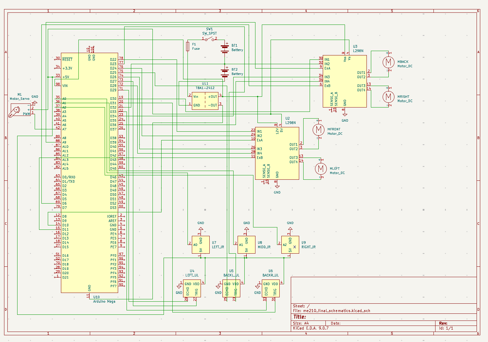

Electrical
The electrical system handled sensing, power distribution, wiring reliability, and a lot of painful debugging. This page includes the final schematic and the old tape-sensor appendix.
KiCad
Final schematic

Control hardware
Arduino
- Initially we were using an arduino UNO but it did not have enough pins, so we explored using I2C communication between both Arduinos. We were unable to establish a successful connection between both Arduinos and we are suspecting that ChatGPT's generated code is the culprit in this situation.
- Again, due to messy wiring, we accidentally fried our Arduino UNO since we accidentally connected it to 12V, this also led to overcurrent to our ultrasonic sensors and delayed our progress for a couple days.
- Since we needed more pins and communication between two Arduinos was difficult to establish, we changed to an Arduino MEGA, and we really had to take care of this Arduino and not accidentally fry it too.
- Tape the bottom of the arduino pins so that they don't short with heatsink on motor drivers!
Sensors
Ultrasonic sensors
- We used three ultrasonic sensors to detect when our bot was oriented correctly. We had one on its left side and two on the back side. When all three detected values low enough to signify that we were near a wall, as well as when the two back sensors detected values that were the same or had a difference of about 1 or 2 cm, then we knew we were also parallel to the wall.
- We saved two Arduino pins by tying all three echo pins together.
Sensors
IR sensors
- These were used to initially know when to stop moving to the right after orienting, line follow towards the center of the arena, as well as detect when our bot should stop when they detected the hog lines.
- 22k and 47k with OPB704WZ -> very poor performance with not enough reading variation between tape/no-tape datasheet
- Used the TCRT5000 module instead which doesn't require any resistors! module link
Power
Power architecture
- We used two 7.2 NiMH batteries connected in series to produce a combined 14.4V, which we then stepped down using a buck converter to around 8.3V.
- This powered our arduino and our 12V pins on the H-bridges.
- We had an on/off switch that easily stopped power from running through our entire bot as well as a fuse to protect from overcurrent production.
- All our sensors, our servo, and the 5V pins on the H-bridges were powered using the 5V pin on the arduino.
Reliability
Wire management and debugging
Wire Management: BE EXTRA NICE TO THE ELECTRONS!
During earlier stages of testing, we spent a lot of time debugging simply due to flimsy connections that would come loose as the robot moved. Adding wire connectors and cleaning up our wiring, learning how to crimp important wires (and using tape when necessary!) helped us a lot.
- However, this setup was still not robust enough. Even towards the end of the project, we would sometimes still not get valid readings due to loose wires.
- Overall, we believe that our logic was sound and when the robot functioned it never got stuck in a loop or failed on itself and that the main culprit was the loose connections.
- As we progressed with more testing attempts, moving the robot more, we think the wiring got more and more loose which ended up sabotaging our performance in the competition as our main issue was a singular loose wire.
- Conclusion: Taking the time to clean up and fix the wiring early on would have saved us hours of confusion and debugging and would have potentially led to better results for us on the competition.
Crimping:
- On the day of the competition, a wire broke since it was never inserted into its Molex connector plastic cap so every time the wire was attached and detached, we were tugging on the wire itself. During the process of crimping it again, we realized that the orientation of the plastic cap mattered as it had different shapes on both leads.
Making electrical connections reliable:
- Take the time to solder nicely with heat shrink!
- Tape the connecting wires!
- If you need to use a crocodile clip for more than 1 hour, use an actual wire instead.
Debugging tips:
- Multimeter is your good friend
Total components fried:
- 3 Arduinos
- Milly's nice Apple adaptor
- 1 fuse
Appendix
Resistor calculations for old tape sensor circuit
LED
Common emitter config phototransistor
Reminder: When the sensor sees white, phototransistor current is higher \(\rightarrow\) it pulls the node down. When it sees black, current is low \(\rightarrow\) node stays high.
- White seen as low
- Black seen as high